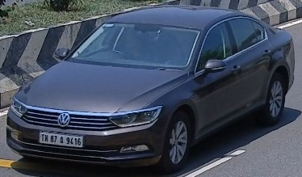
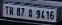

Pipeline Controls
Detected Coordinates
| Target | [X1, Y1, X2, Y2] | Conf |
|---|
Cropped Patches
Stage 1: Vehicle Region of Interest

Stage 2: High-Res License Plate

1. System Architecture: Two-Stage ALPR Pipeline
In modern Automated License Plate Recognition (ALPR), attempting to locate license plates directly in arbitrary wide-angle traffic surveillance footage suffers from severe vulnerability to false positives. Roadside signs, reflective bollards, and building hoardings frequently share the rectangular high-contrast geometry of plates.
This architecture decomposes the task into two sequential sub-problems:
┌─────────────────────────────────────────────────────────────────────────────┐
│ RAW TRAFFIC IMAGE (1024x576) │
└──────────────────────────────────────┬──────────────────────────────────────┘
│
▼
┌───────────────────────────────────────────┐
│ STAGE 1: Vehicle Detector (YOLOv8-COCO) │
│ Detects: Car, Truck, Bus, Motorcycle │
└─────────────────────┬─────────────────────┘
│
▼ Bounding Box: [122, 149, 482, 360]
┌───────────────────────────────────────────┐
│ ROI Cropping & Boundary Padding (2%) │
│ Extracts vehicle patch (360x211 px) │
└─────────────────────┬─────────────────────┘
│
▼
┌───────────────────────────────────────────┐
│ STAGE 2: License Plate Detector (YOLO) │
│ Focuses ONLY inside the cropped vehicle │
└─────────────────────┬─────────────────────┘
│
▼ Crop BBox: [46, 160, 108, 185]
┌───────────────────────────────────────────┐
│ Coordinate Space Inversion (Global Map) │
│ Global Plate: [161, 305, 223, 330] │
└─────────────────────┬─────────────────────┘
│
▼
┌───────────────────────────────────────────┐
│ Multi-Format AI Training Data Exporter │
│ JSON Metadata + YOLO Normalized .txt │
└───────────────────────────────────────────┘
2. Why Two-Stage Beats Single-Stage Detection
| Metric / Criterion | Single-Stage (Direct Plate) | Two-Stage (Vehicle → Plate) |
|---|---|---|
| False Positive Rate | High (Triggered by signboards, barrier markings, storefronts) | Virtually Zero (Search space restricted strictly to vehicle body) |
| Effective Resolution | Low (Plate is tiny fraction of entire image, often < 0.5% pixels) | High (Cropped vehicle is scaled to detector input size, magnifying plate features) |
| Angle & Occlusion | Fails when vehicle is angled or in multi-lane traffic | Robust (Vehicle geometry guides plate context) |
| Training Efficiency | Needs large full-scene background negative samples | Plate model trains strictly on tight vehicle crops |
3. Mathematical Formulations & Coordinate Transformations
3.1 Coordinate System & Inversion Mapping
Let $(X_{v1}, Y_{v1}, X_{v2}, Y_{v2})$ denote the vehicle bounding box coordinates in the original image coordinate frame $\mathbb{R}^{W \times H}$. Let $(x_{p1}, y_{p1}, x_{p2}, y_{p2})$ denote the license plate coordinates predicted inside the vehicle crop:
Global Plate Y1: Y_p1 = Y_v1 + y_p1
Global Plate X2: X_p2 = X_v1 + x_p2
Global Plate Y2: Y_p2 = Y_v1 + y_p2
3.2 YOLO Training Normalization
Deep learning object detection architectures (YOLO, DETR, SSD) require bounding boxes to be normalized within the range $[0.0, 1.0]$ relative to the master image dimensions:
c_y = ((Y_1 + Y_2) / 2.0) / Image_Height
w = (X_2 - X_1) / Image_Width
h = (Y_2 - Y_1) / Image_Height
3.3 Intersection over Union (IoU) & CIoU Loss
During evaluation and Non-Maximum Suppression (NMS), the overlap between predicted box $B_p$ and ground truth $B_{gt}$ is quantified via IoU:
Modern YOLO architectures optimize Complete IoU (CIoU), which enforces penalty on central point distance and aspect ratio consistency:
where v = (4 / π^2) · (arctan(w^{gt}/h^{gt}) - arctan(w/h))^2
4. Integration into an AI Training Pipeline
When training or fine-tuning models on new vehicle or plate datasets, follow standard YOLO format standards:
Dataset Directory Structure
dataset/
├── data.yaml
├── images/
│ ├── train/
│ │ ├── frame_0001.jpg
│ └── val/
│ ├── frame_0050.jpg
└── labels/
├── train/
│ ├── frame_0001.txt <-- [class_id cx cy w h]
└── val/
├── frame_0050.txt
data.yaml Configuration
path: ./dataset
train: images/train
val: images/val
names:
0: vehicle
1: license_plate
5. Python Implementation Guide
5.1 Running Vehicle Detection Alone
# Command line execution
python3 detect_vehicle.py --image sample.jpg --conf 0.35 --output-dir outputs
# Python module integration
from detect_vehicle import VehicleDetector
detector = VehicleDetector(model_path="yolov8n.pt", conf_threshold=0.35)
results = detector.detect("sample.jpg")
for vehicle in results["vehicles"]:
print(vehicle["bbox_xyxy"], vehicle["bbox_yolo_norm"])
5.2 Running the Complete Two-Stage Pipeline
# Command line execution
python3 detect_plate.py --image sample.jpg --car-conf 0.35 --plate-conf 0.25
# Python module integration
from detect_plate import TwoStagePlateDetector
detector = TwoStagePlateDetector(
car_model_path="yolov8n.pt",
plate_model_path="plate_model.pt"
)
results = detector.detect("sample.jpg")
for v in results["vehicles"]:
for plate in v["plates_detected"]:
print(f"Plate global coords: {plate['bbox_global_xyxy']}")
print(f"Plate YOLO norm : {plate['bbox_yolo_norm']}")
6. Hosting on GitHub.io (GitHub Pages)
This entire study repository with interactive visualization is structured for instant one-click hosting via GitHub Pages:
- Initialize git in your repository folder:
git init git add . git commit -m "feat: Add two-stage vehicle and plate detection system"
- Create a new repository on GitHub (e.g.
vehicle-plate-detection) and push your code:git remote add origin https://github.com/<your-username>/vehicle-plate-detection.git git branch -M main git push -u origin main
- Enable GitHub Pages:
- Navigate to your GitHub repo Settings → Pages.
- Under Build and deployment > Source, select
Deploy from a branch. - Choose
mainbranch and folder/docs(or root), then click Save.
- Within 1-2 minutes, your project documentation and interactive coordinate browser will be live at:
https://<your-username>.github.io/vehicle-plate-detection/